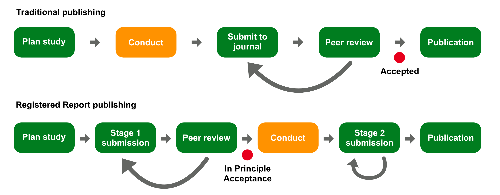

Registered Reports as a model for research reform
Theory and practice
2026-05-21
Research crises

Traditional publishing

Registered Reports

How to write an RR
Stage 1 manuscript
Write introduction, background and methods.
In Principle Acceptance
Carry out the study according to the Stage 1 registered protocol.
Stage 2 manuscript
Write results (of registered analyses + optional exploratory non-registered analyses), discussion and conclusion.
Publication
Your Stage 2 manuscript is published.
See Chambers and Tzavella (2021) and https://www.cos.io/initiatives/registered-reports.
Levels of bias control

Tip 1 Precise RQs (and RHs)
Vague RQ
Do bilingual individuals have a cognitive advantage in executive functions?
Define all content words
What type of bilingualism?
Advantage in what sense?
Which executive functions? In which tasks? Within which constraints?
What mechanistic process model are we assuming?
Vague RQ
How are rivers represented in newspaper articles that talk about pollution?
Define all content words
- What do we mean by representation?
- Critical Discourse Analysis? Which framework?
- Which newspapers? What time range?
- What keywords?
- What kind of pollution?
Tip 2 Detailed methodology
Quantitative
Specify operationalisation of all concepts.
Full analysis pipeline (not enough to say “we will use mixed-effects models”).
Sample size determination. Lakens (2022)
Causal inference (for variable selection). Rohrer (2018), Bailey et al. (2024)
Detailed description of statistical modelling, predictors, interactions, random/varying effects, prior specification, diagnostics.
Provide positive/negative controls, data validity checks.
Working code using simulated or pilot data.
Qualitative
- Specify the framework and linguistic strategies of interest (even if exploratory).
- Full explanation of how data is collected.
- Provide a detailed description of how the analyses will be conducted.
- Describe assumptions about the chosen data set.
- Anything else? Karhulahti (2022), Karhulahti et al. (2023)
Tip 3 Research compendium
Tip 4 Assess feasibility
Venues
Registered Reports in Linguistics (RRLing): https://journals.ed.ac.uk/rrling/index
Journal of Phonetics.
Language and Speech.
Bilingualism: Language and Cognition.
Glossa Psycholinguistics.
Make your next study a Registered Report!
Things we can talk about
Research crises/cycle/QRPs.
RRLing and PCI RR.
Reviewing RRs.
RRs for PGT/PGR students.
And anything else you’d like!
References
Proportion of negative results

From Scheel et al. (2021).
Not killing the vibe

From Soderberg et al. (2021).
Guidance for students/supervisors
PhD students especially can benefit from RRs.
Year one to develop topic and submit Stage 1.
Programmatic RRs.
Master students: Stage 1 manuscript as dissertation.
Start very early (Semester 1).
Arrangements for post-IPA.